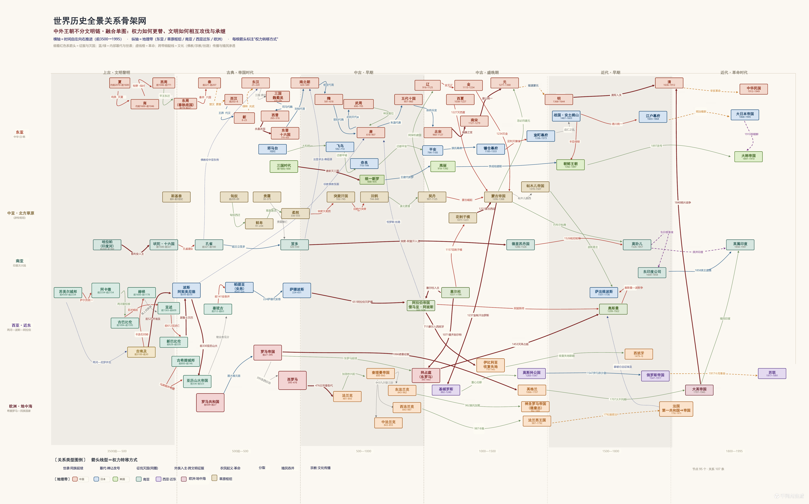

时空巧记中外历史
— A Spatiotemporal Atlas of History
选择时代 ▾
中国历史
外国历史
定位
重置视图
🔊
⚖ 均衡
🗺 疆域
100%
×
正在展开时空古卷…
中国世界遗产
×
全部 61
文化 42
自然 15
双遗产 4
三条轴都有入口
★
中国轴
点星标 → 中国世界遗产（61 项）
●
外国轴
点圆点 → 按文明链浏览
◆
合轴
点菱形 → 世界全景关系骨架网
合轴 · 世界全景关系骨架网
分圈同色版 · 单页大图，可在内嵌阅读器里缩放 / 拖动（Esc 关闭）
图片模式
－
100%
＋
适应窗口
100%
新窗口打开
下载 PDF
关闭 ✕

浏览器没有内嵌显示 PDF（常见于安全策略限制）。
在新窗口打开这张大图